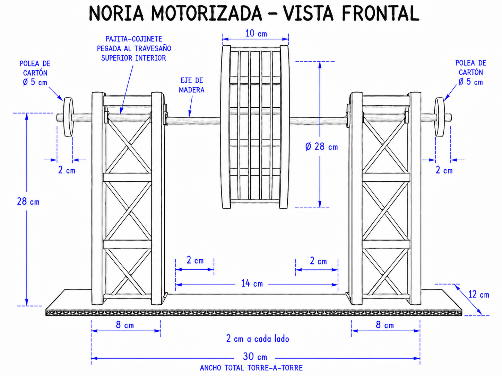

| 01 | Inicio · barras | Explicación, grupos y 50 barras de papel sin cortar |
| 02 | Base | Cartón ≈40×30, plantillas y posición de las torres |
| 03 | Torre 1 | Cortar piezas, montar 4 caras con cruces, ensamblar prisma |
| 04 | Torre 2 | Repetir el proceso de la torre 1 |
| 05 | Aros, radios y cubos | Dos aros hexagonales con sus cubos centrales y radios |
| 06 | Unión de aros | Barras axiales + diagonales en V → rueda terminada |
| 07 | Torres y eje | Pegar torres a la base + cojinetes + ensartar el eje |
| 08 | Transmisión | Polea, motor y correa: reducción 1 : 5 |
| 09 | Circuito | Pila, interruptor, conmutador y reostato por capas |
| 10 | Pruebas y extras | Marcha continua, cabinas opcionales y entrega |